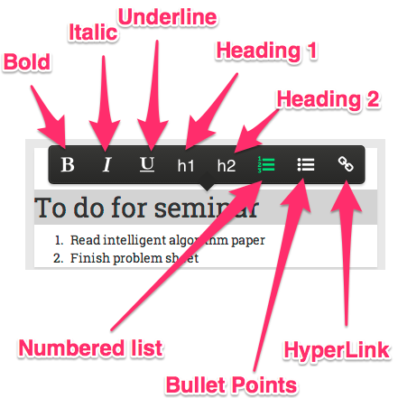
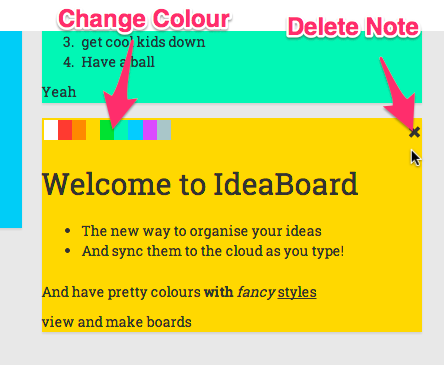

Introduction
Ideas are for keeping, if you let them slip your mind they are gone forever. But they can also be suffocating, having all of them together makes it hard to focus. IdeaBoard allows you to sort and categorise all your ideas into manageable chunks and access them from anywhere. In IdeaBoard there is no need to worry about saving, everything you do in IdeaBoard is automatically saved to the cloud. Watch our video to see how IdeaBoard works.
Boards
To reach the board selection screen from anywhere in IdeaBoard just click the IdeaBoard button in the top left hand corner of the screen. To choose a board simply click on it to be taken to the board screen. To delete a board hover over the board and click the x in the top left corner to delete the board.

To choose a board simply click on it to be taken to the board screen, to view or edit the board. In the middle of the header is the board name and to the right is the author of the board.To create a board simply click on the New Board button in the top left of the screen from anywhere within IdeaBoard.

Columns
To edit a column title simply click select the header and type your own text. To delete a column hover over it with your mouse and click the x button in the top right corner.

To create a column move your cursor to the right of the board, and click the new column button that appears.

Notes
To edit a note simply click and type inside a note. Like anything you do in IdeaBoard all your changes will be saved automatically. All notes support rich text editing including:
- Headers (h1 and h2)
- Bullet Points
- Numbered Lists
- Text styles(bold, italic and underline)
- HyperLinks
To access any of these option simply highlight the text and click the relevant button to apply the style.
To create a note simply hover down towards the end of a column and click the new column button as it fades in.
To change the colour of a note hover over and pick a colour from the picker or to delete a node hover over a note and click the x that appears.
